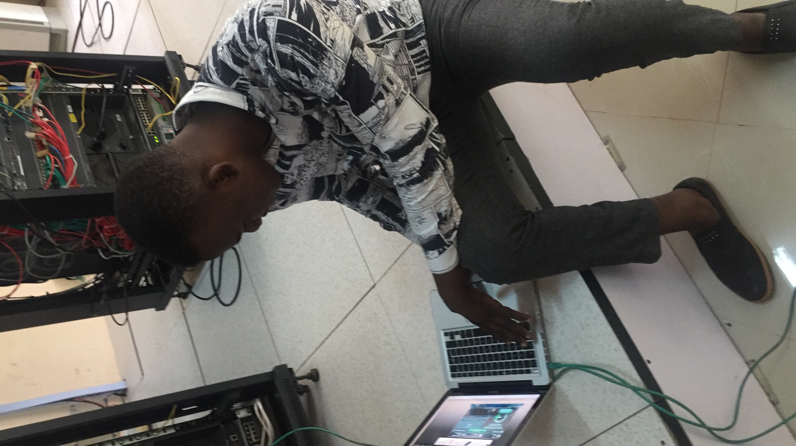

2015

Chapter 01
Building the Backbone of Reliable Systems
Started the journey by leading secure, high-availability wireless and virtualized infrastructure deployments. Managed a team of 7 while reducing capital expenditure by 50% and supporting thousands of concurrent users.